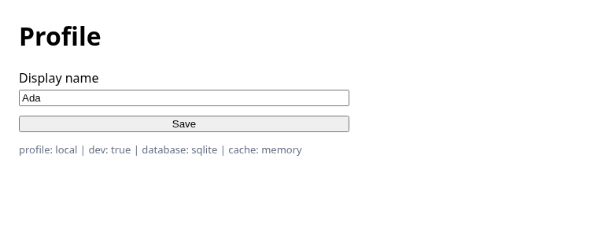
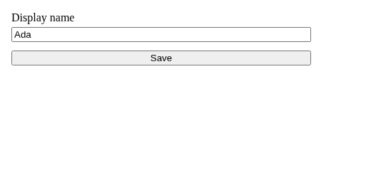
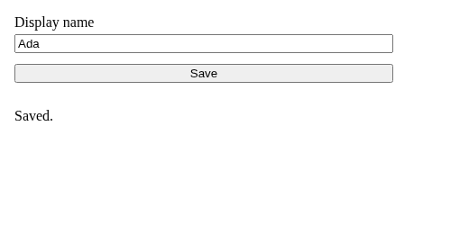
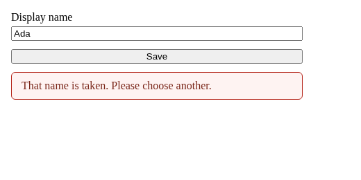
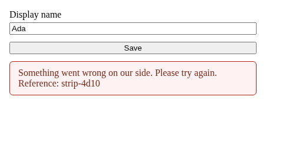
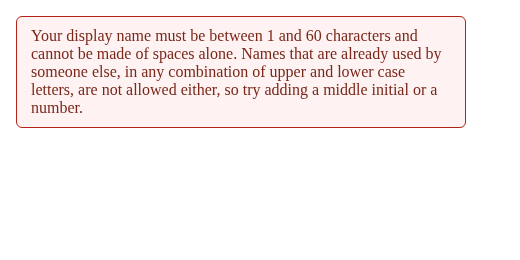

The problem, and the idea
When an AI agent builds an app, it follows your instructions for a while and then forgets. Errors come back as text that looks like data, code gets shaped around one database, and parallel agents overwrite each other. Better instructions did not fix it. So the rules live in the project and block the agent.
How the skeleton is built
A feature is a strip: a chain of small steps. Every step returns a Result, so a failure is never mistaken for a value. Steps never touch a database or cache directly. They use ports, and a profile decides which adapter sits behind each port.
Eight ports, two or three adapters each
Every port has at least two working adapters and one shared test suite that runs against both, so swapping a provider changes an adapter and a setting, not the features. Dashed chips are real adapters that are planned, not built.
Logger
consolememoryplanned: hosted log serviceClock
systemfixedIdGenerator
uuidsequenceDatabase
sqlitememoryplanned: PocketBase, SupabaseReporter
lognoneplanned: hosted error trackingMetrics
lognoneplanned: hosted metricsCache
memorynullplanned: Workers KVObjectStorage
fsmemoryplanned: R2One feature, every ending
profile.save is tested against both databases and with the cache on and off. Each ending gives the user the right thing, and nothing internal leaks.
Development sends nothing, production sends everything
Error tracking and metrics are ports too. The profile decides which adapter sits behind them, and the profile schema refuses a bad choice at startup. The dev flag is only a reading of that choice, so no flag can point a development machine at production services.
What it looks like
The first image is the real app, served from a network namespace with no network, from a local SQLite file. The rest are Storybook stories rendered in headless Chrome: every state can be previewed without running the app or a database.






The day, task by task
Every task is one commit with a start row and a done row in a progress log, so any agent can resume exactly where work stopped.
Two agents at once, in separate worktrees
The database port and the cache and storage ports were built at the same time by two sub-agents, each in its own git worktree. Each branch was checked against its task's file list, then merged in order.
The numbers
Lines, counted 2026-11-23 20:57 UTC. The skeleton has 73 code files and 44 test files. All 462 skeleton tests run offline (17 are skipped on purpose, for example the null cache cannot store anything).
What went wrong, and what caught it
These stay in the record. They are the process working.
- Tests caught a wrong design choiceLowercasing the display name in the database port stored it as “ada”. The schema now keeps what the user typed and a separate lowercase key for uniqueness.
- The checker flagged our own test fixturesIt scans every file under src for steps and strips, so the deliberately broken strips in the library tests were reported. The tests moved to tests/lib. A rule change to skip test files is suggested, and left to the builder.
- Two confirmed decisions were too narrowWriting the strip library showed that skipping a failed step (D5) and where fallback steps live (D12) needed refining. The agent proposed D5b and D12 and waited for a yes instead of changing them.
- The test script silently stopped running some testsAfter a folder move the script pointed at the old folder, so 36 tests did not run for one commit. Found by a count mismatch, fixed, and written down.
- Parallel tasks tripped the progress ruleTasks started in parallel look like “started, never done” to rule R40, and merge refuses while an earlier worktree is open. Both rough edges are recorded.
- Changing the judge needs the judge’s tests rerunTurning on the test command inside pnpm check made one checker test fail: its fixture projects had inherited the real test command. Found by running the checker’s own suite after the config change, fixed in the test helper.
- One boolean could undo data separationThe agent found no earlier mention of a dev flag, said so, and proposed a read-only value derived from APP_ENV, because a flag that switches to production services breaks data separation. The profile stays the only thing that chooses adapters.
Where things stand
| Part | State |
|---|---|
| Guardrails: 41 rules, check command, worktree command, hooks, steering | built, hooks on |
| Skeleton core: Result, steps, strips, six ports with two adapters each, profiles | built |
| Example feature, Storybook stories, Next.js page running offline | built |
Error reporter, metrics, gating, and a read-only dev flag derived from APP_ENV | built (hosted adapters planned) |
Test command inside pnpm check, Stop-hook message fix | done |
| Real adapters: PocketBase, Supabase, Workers KV, R2, hosted error and metrics services | planned |
| Zidolia and MiniCargo apps | not started |
| Clicking Save in a real browser | not verified (the action is tested in Node) |